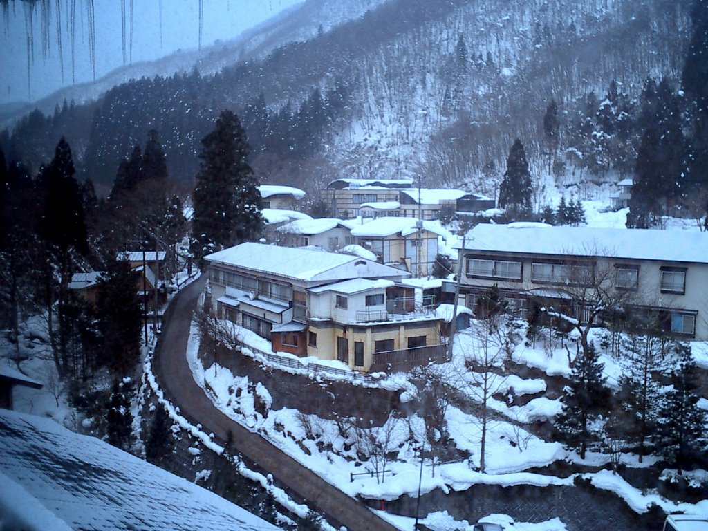
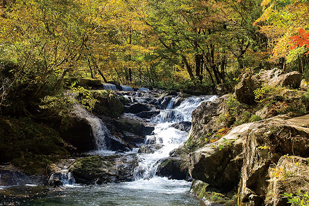

鶯宿温泉


収容人数1000名を超える温泉リゾートホテル詩人でから、心温まる家庭的おもてなしの小さな旅館
まで約18軒の湯宿が立ち並ぶ温泉郷。地域には、日本最大級の本格的ガーデニング公園
「フラワー＆ガーデン森の風」もあり、春にはカタクリの群生地や野草を楽しみながら鴬の鳴き声を
聴くことができる。新緑や紅葉などの四季を感じながら、やすらぎのひとときを過ごすことができる。
観光情報
ジャンル
温泉・宿
所在地
岩手県岩手郡雫石町鴬宿
電話番号
019-695-2209
[アクセス経路]
雫石駅 → 【車12分】温泉
盛岡IC → 【車25分】 鶯宿温泉